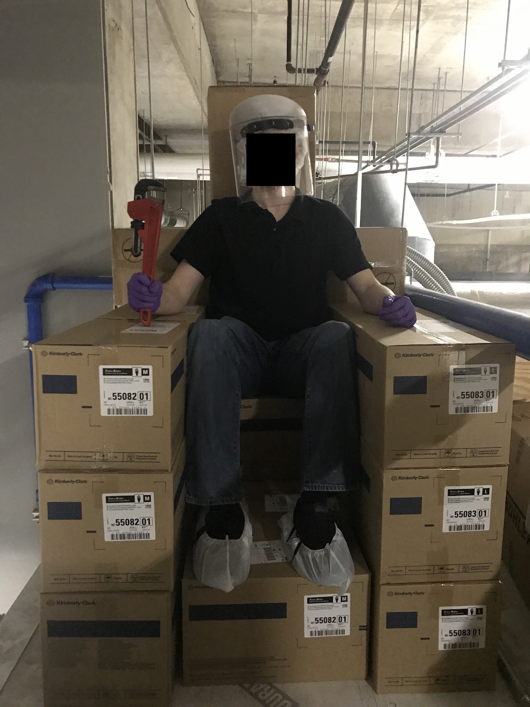

First, a brief history and description of my role at AggieFab.
I began working there as a student technician in October 2017 and ended in May 2020 — 2.5 years total, excluding the summer of 2019, when I was interning at a company. I worked 20 hours per week every week, except for shorter weeks or holidays (where I worked anywhere between 20-39 hours).
AggieFab is a shared-user nanofabrication facility open to anyone who pays the membership and equipment fees. Texas A&M students, other university students, and private companies are welcome to join and use the facilities. The lab has tools that allow users to create devices on the micro- (one-millionth of one meter, or 10-6 m) and nano-scale (one billionth of one meter, or 10-9 m). Users vary heavily on discipline—while AggieFab is under the electrical engineering department's umbrella, students from materials science, chemistry, petroleum engineering, and even pharmaceuticals sciences use the facilities. The projects are equally as diverse: from microfluidics to GaN-based technologies to waveguides, there is a bit of everything as long as it is quite small and needs to be physically fabricated.
I had four primary responsibilities:
Whenever new or existing users needed training or assistance on tools, I helped them to learn the tool's operation and theory and answered any questions they had that was unique to their project. This requires an understanding of the entire process. For example, if a user was having trouble performing lithography, I would ask a few questions about their process, make any obvious improvements, then go and observe them in the lab.
All of the tools used are very technical. A majority have vacuum systems and almost all have electronics. Because of the constant usage—some of which is very stressful on the tool—preventative maintenance and repairs were done on a regular basis.
Occasionally new tools were acquired (hey, that's me!) by donation or purchase. I assisted in installation alongside other student workers, full-time staff, and factory engineers/technicians.
Documentation in the form of tool manuals, troubleshooting guides, and process guides were used to advance understanding for tool users and standardize maintenance and repair procedures.
Checking inventory and restocking, help moving large items, taking funny pictures, etc. It was a new experience every day.
Time and time again it is said that anybody who leaves America and experiences another culture for the first time is dramatically surprised and possibly even changed by that exposure. Outside of leaving America or traveling to an enclave of minorities (universities are close to this), the closest you can get to this experience is interacting with international students and learning about their culture.
Up to my start date in October 2017, I had very few meaningful interactions with any international students. I was acquaintances with a student from Saudi Arabia, but knew essentially zero people not from the U.S. I grew up in a predominantly white and Hispanic area and never sought out others of different ethnicities, as I didn't view it as important.
The lab, as it turned out, was predominantly international students and employees. Countries (approximate number of people in parentheses): China (30), India (10), Korea (7), Taiwan (5), Iran (5), Turkey (3) Russia (1), Saudi Arabia (1), Bangladesh (1), Ukraine (1), Pakistan (1), Nigeria (1), Brazil (1), Spain (1), Qatar (1), Eritrea (1).
Interacting with these students had a significant impact on me. I learned about other countries' cultures directly from their citizens, not the mainstream media or stereotypes that often pervert our concepts of who these people are.
[FINISH]I've come to learn that I am obsessed with progress and learning. Obsession is not an exaggeration nor for-lack-of-a-better-term. Progress was embodied in a few different ways.
I came to learn that a huge motivator of mine is progress. I'd go so far as to say I'm obsessed with progress.
Thank you to the following people for helping to make AggieFab such an awesome experience: LR, DM, MWL, JHW, MR, AB, MT, JG, WB, MB, AY, AD, ZY, AU, YB, MRS, AB, ES, AJ, HTC, TJ, BA, ZC, AG, AB, GS, MA, ZM, AA, SBK, HC, DY, RS, NA, RU, ZL, MK.